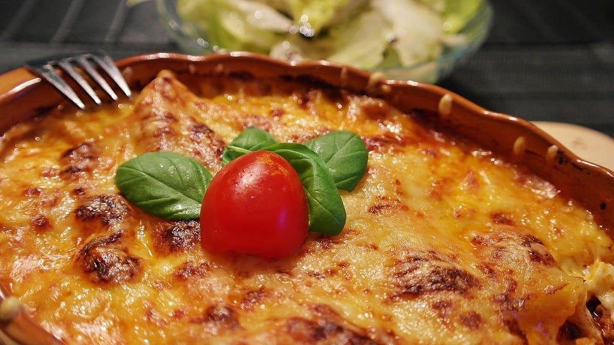

Lasagna
Prep time: 30 minutes
Cook time: 2 hour
Additional time: 15 minutes
Total time: 2 hours 45 minutes
The ultimate comfort recipe
What makes this dish so delicious? It could be the mixture of two types of ground meat—beef and Italian sausage—that gives it so much flavor. It could be the addition of sugar to the acidic, tomato-based sauce, which mellows it out and gives it just the right hint of sweetness. It could also have something to do with the three kinds of cheese thrown in: Parmesan, mozzarella, and ricotta. Or maybe, this lasagna is so good because it's always been made with lots of love.
This is a recipe I reach for time and time again, both to fill bellies and warm hearts. There's much I'm uncertain about in life, but something I know for sure is that I have the best lasagna recipe to share with the people I love, and lots of memories of a life lived.
Ingredients
- 1 pound ground beef
- 1 pound Italian sausage, casing removed
- 3/4 cup chopped onions
- 1 garlic clove, minced
- 16 ounces canned tomato paste
- 15 ounces canned tomato sauce
- 2 tablespoons dried parsley flakes
- 1 teaspoon dried sweet basil
- 2 1/2 teaspoons salt
- 2 tablespoons granulated white sugar
- 3 cups ricotta cheese
- 1 cup shredded Parmesan cheese, halved
- 1 teaspoon dried oregano
- 3/4 pound shredded mozzarella cheese
- 1 pound lasagna noodles (such as "no-bake" lasagna sheets)
Directions
- Combine ground beef, Italian sausage, onions, and garlic in a deep cooking pan or sauce pot, cook until meat is browned and onions are translucent.
- Drain meat mixture; then add tomato paste, tomato sauce, parsley flakes, basil, 1 teaspoon salt, and sugar to the pan. Stir until well-combined, then let simmer, for at least one hour. (I like to simmer my sauce on the stove for several hours to allow the flavors to combine.)
- When ready to assemble the lasagna, spray a lasagna pan (or 9 X 13 baking dish) with cooking spray and set aside. Preheat the oven to 350 F.
- In a large mixing bowl, combine ricotta cheese, ½ cup Parmesan cheese, oregano, and remaining 1 ½ teaspoons of salt until thoroughly mixed.
- Layer lasagna noodles, meat sauce mixture, ricotta cheese mixture, and mozzarella cheese 2-3 times (depending on how much pasta you prefer in your lasagna), then top with remaining mozzarella cheese and ½ cup of the parmesan cheese.
- Cover with aluminum foil (I spray the inside of the foil to prevent cheese from sticking to it) and bake at 350 degrees F until cheese is melted and sauce mixture is bubbling, 45 to 60 minutes.
- If you prefer a crispy cheese topping, switch the oven to broil and remove foil. Broil on high for 3 to 5 minutes, until cheese is golden brown.
- Let stand for 15 minutes before serving. Serves 12.
Return Home